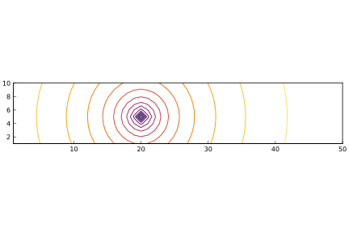
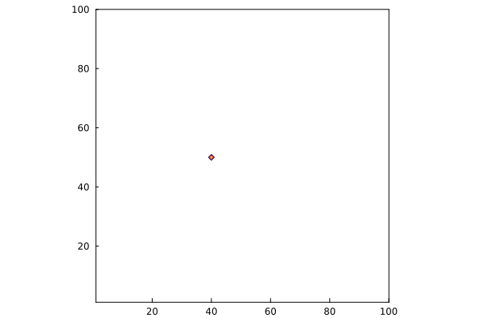
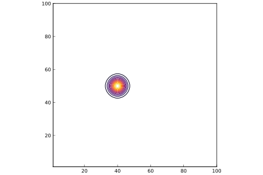

Mimetic calculus on grid data
\[\def\ddt#1{\frac{\mathrm{d}#1}{\mathrm{d}t}} \renewcommand{\vec}{\boldsymbol} \newcommand{\uvec}[1]{\vec{\hat{#1}}} \newcommand{\utangent}{\uvec{\tau}} \newcommand{\unormal}{\uvec{n}} \renewcommand{\d}{\,\mathrm{d}}\]
Field differencing operations
Field operations transform one data type to another. Some of these are differencing operations, analogous to differential counterparts in continuum calculus: curl, divergence, and gradient. For example, a curl operation can act upon dual nodal data (like streamfunction) and return primal edge data (i.e. velocity); a divergence operation acts on edge data (primal or dual) and returns nodal data of the same cell type. Note that these operations are mimetic: they maintain some of the same properties as the continuous counterparts. For example, the divergence of the curl of any dual nodal data is exactly zero. The curl of the gradient of primal nodal data is also zero.
Let's take the curl of the dual nodal data we constructed:
julia> curl(w)
Edges{Primal,5,4,Float64,Array{Float64,1}} data
u (in grid orientation)
3×5 Array{Float64,2}:
5.0 5.0 5.0 5.0 5.0
5.0 5.0 5.0 5.0 5.0
5.0 5.0 5.0 5.0 5.0
v (in grid orientation)
4×4 Array{Float64,2}:
-1.0 -1.0 -1.0 -1.0
-1.0 -1.0 -1.0 -1.0
-1.0 -1.0 -1.0 -1.0
-1.0 -1.0 -1.0 -1.0We could also make this a little more cute by giving the curl operator a symbol and then acting upon the data as though it were a matrix-vector operation:
julia> C = Curl()
Curl()
julia> C*w
Edges{Primal,5,4,Float64,Array{Float64,1}} data
u (in grid orientation)
3×5 Array{Float64,2}:
5.0 5.0 5.0 5.0 5.0
5.0 5.0 5.0 5.0 5.0
5.0 5.0 5.0 5.0 5.0
v (in grid orientation)
4×4 Array{Float64,2}:
-1.0 -1.0 -1.0 -1.0
-1.0 -1.0 -1.0 -1.0
-1.0 -1.0 -1.0 -1.0
-1.0 -1.0 -1.0 -1.0Note that C is not actually a matrix. Rather, it is simply another name for the curl operator, and * is defined in this context to apply curl to whatever is to the right of it. The other operators have similar constructs.
Suppose we wish to apply the curl operation over and over. The curl() function allocates memory for the result whenever it is used; this would become expensive if it is done often. So it makes sense to preallocate space for this result and use the curl!() function, which simply fills in the elements:
julia> q = Edges(Primal,w)
Edges{Primal,5,4,Float64,Array{Float64,1}} data
u (in grid orientation)
3×5 Array{Float64,2}:
0.0 0.0 0.0 0.0 0.0
0.0 0.0 0.0 0.0 0.0
0.0 0.0 0.0 0.0 0.0
v (in grid orientation)
4×4 Array{Float64,2}:
0.0 0.0 0.0 0.0
0.0 0.0 0.0 0.0
0.0 0.0 0.0 0.0
0.0 0.0 0.0 0.0
julia> curl!(q,w)
Edges{Primal,5,4,Float64,Array{Float64,1}} data
u (in grid orientation)
3×5 Array{Float64,2}:
5.0 5.0 5.0 5.0 5.0
5.0 5.0 5.0 5.0 5.0
5.0 5.0 5.0 5.0 5.0
v (in grid orientation)
4×4 Array{Float64,2}:
-1.0 -1.0 -1.0 -1.0
-1.0 -1.0 -1.0 -1.0
-1.0 -1.0 -1.0 -1.0
-1.0 -1.0 -1.0 -1.0Note that we used a convenience function for setting up primal edge data q of a size that corresponds with w.
Let's check that divergence of the curl is indeed zero:
julia> D = Divergence()
Divergence()
julia> D*(C*w)
Nodes{Primal,5,4,Float64,Array{Float64,2}} data
Printing in grid orientation (lower left is (1,1))
3×4 Array{Float64,2}:
0.0 0.0 0.0 0.0
0.0 0.0 0.0 0.0
0.0 0.0 0.0 0.0The Laplacian and its inverse
CartesianGrids also makes heavy use of the discrete Laplacian operator, $L$. This mimics the continuous operator, $\nabla^2$, and acts upon data of any type. Let's apply this to the original data:
julia> laplacian(w)
Nodes{Dual,5,4,Float64,Array{Float64,2}} data
Printing in grid orientation (lower left is (1,1))
4×5 Array{Float64,2}:
0.0 0.0 0.0 0.0 0.0
0.0 0.0 0.0 0.0 0.0
0.0 0.0 0.0 0.0 0.0
0.0 0.0 0.0 0.0 0.0As with the other operators, we can also construct a shorthand of the discrete Laplacian operator,
julia> L = plan_laplacian(size(w))
Discrete Laplacian on a (nx = 5, ny = 4) grid acting on Float64 data with
factor 1.0 and spacing 1.0
julia> L*w
Nodes{Dual,5,4,Float64,Array{Float64,2}} data
Printing in grid orientation (lower left is (1,1))
4×5 Array{Float64,2}:
0.0 0.0 0.0 0.0 0.0
0.0 0.0 0.0 0.0 0.0
0.0 0.0 0.0 0.0 0.0
0.0 0.0 0.0 0.0 0.0An important part of CartesianGrids is the inverse of this operator. That is, we need the ability to solve the discrete Poisson system
\[Ls = w\]
for $s$, for given data $w$. We achieve this in CartesianGrids with the lattice Green's function. To outfit the operator with its inverse, we simply set the optional flag:
julia> L = plan_laplacian(size(w),with_inverse=true)
Discrete Laplacian (and inverse) on a (nx = 5, ny = 4) grid acting on Float64 data with
factor 1.0 and spacing 1.0Then, the Poisson system is solved with the backslash (\),
julia> s = L\w
Nodes{Dual,5,4,Float64,Array{Float64,2}} data
Printing in grid orientation (lower left is (1,1))
4×5 Array{Float64,2}:
24.082 15.9349 12.2076 13.0464 19.5282
23.5931 15.0969 11.0184 11.7015 18.2956
29.2015 21.841 18.0677 18.4457 23.9041
37.5698 31.9978 28.9659 29.1093 33.016
julia> L*s
Nodes{Dual,5,4,Float64,Array{Float64,2}} data
Printing in grid orientation (lower left is (1,1))
4×5 Array{Float64,2}:
0.0 0.0 0.0 0.0 0.0
0.0 12.0 13.0 14.0 0.0
0.0 7.0 8.0 9.0 0.0
0.0 0.0 0.0 0.0 0.0It should be observed that the cells on the perimeter have not recovered the original values of w. These are the ghost cells, and the Laplacian operation does not apply to these.
It is also important to note that, although it looks as though we've constructed a matrix L and performed various matrix-vector operations with it, this is not actually the case. In fact, the \ operation associated with L is significantly faster than a matrix inversion. Internally, it carries out a fast convolution between the data in w and the lattice Green's function, via fast Fourier transform. The lattice Green's function (LGF) table is pre-computed and pre-transformed in the original construction of L. (In fact, because this table is not dependent on the size of the grid, it is actually computed once for all time and stored in a file; subsequent applications of it just load it in and use the portion of it necessary for a certain grid.)
The lattice Green's function has the advantage that it is independent of the grid size. Let's solve the Poisson system when $w$ is a unit field, i.e. a field of zeros, except for a single $1$ entry at one node. The solution $s$ represents the influence of this point on all nodes. To see that the LGF does not depend on the grid size, let's use a grid that is long and skinny and plot the solution on it
julia> w = Nodes(Dual,(50,10));
julia> w[20,5] = 1.0
1.0
julia> L = plan_laplacian(w,with_inverse=true)
Discrete Laplacian (and inverse) on a (nx = 50, ny = 10) grid acting on Float64 data with
factor 1.0 and spacing 1.0
julia> plot(L\w)
Plot{Plots.PyPlotBackend() n=1}
The influence is not affected by the narrow grid dimensions.
The integrating factor
An operator related to the lattice Green's function is the integrating factor. Suppose we have the system of ODEs
\[\ddt u = L u + f(u,t), \quad u(0) = u_0,\]
where $L$ is the discrete Laplacian (on an infinite uniform grid), and $u$ are nodal data (and $f$ is a nodal-valued function acting on this nodal data). The exact solution of this problem is
\[u(t) = E(t)u_0 + \int_0^t E(t-\tau) f(u(\tau),\tau)\,\mathrm{d}\tau,\]
where $E(t)$ is the integrating factor (or matrix exponential) for the system. The easiest way to understand the role of $E(t)$ is to consider its behavior when $f$ is zero and $u_0$ contains a field of zeros except for a single $1$ entry at one cell. Let's set up this initial data:
julia> u0 = Nodes(Dual,(100,100));
julia> u0[40,50] = 1.0
1.0
julia> plot(u0)
Plot{Plots.PyPlotBackend() n=1}
Then, $E(t)u_0$ diffuses this initial unit perturbation in each direction. Here, we apply it with $t = 5$:
julia> E = plan_intfact(5,u0)
Integrating factor with parameter 5 on a (nx = 100, ny = 100) grid
julia> plot(E*u0)
Plot{Plots.PyPlotBackend() n=1}
Note that $E(0) = I$, where $I$ is the identity. Also, the integrating factor has the useful property that $E(t+\tau) = E(t)E(\tau)$. From these properties, it follows that $E^{-1}(t) = E(-t)$. Let's suppose we wish to advance $u$ from time $t = \tau-h$ to time $t = \tau$. For any $t$ in this interval, we can define an auxiliary quantity, $v(t;\tau) = E(\tau-t)u(t)$, which represents the instantaneous value of $u$, but diffused to the end of the time interval. This new quantity satisfies the modified set of ODEs
\[\ddt v = E(\tau-t) f\left[ E(t-\tau) v(t;\tau),t\right],\quad v(\tau-h;\tau) = E(h)u(\tau-h)\]
The result of integrating this set of ODEs to $t = \tau$ is $v(\tau;\tau) = u(\tau)$. In other words, the integrating factor allows us to solve a somewhat reduced set of ODEs.
Other field operations
Other field operations shift the data, by local averaging, from one data type to another. These operations are all called grid_interpolate!, and they require that the target data be preallocated. For example, to interpolate dual node data to the dual edges,
julia> w = Nodes(Dual,(5,4));
julia> w .= reshape(1:20,5,4)
Nodes{Dual,5,4,Float64,Array{Float64,2}} data
Printing in grid orientation (lower left is (1,1))
4×5 Array{Float64,2}:
16.0 17.0 18.0 19.0 20.0
11.0 12.0 13.0 14.0 15.0
6.0 7.0 8.0 9.0 10.0
1.0 2.0 3.0 4.0 5.0
julia> Ww = Edges(Dual,w);
julia> grid_interpolate!(Ww,w)
Edges{Dual,5,4,Float64,Array{Float64,1}} data
u (in grid orientation)
4×4 Array{Float64,2}:
0.0 0.0 0.0 0.0
11.5 12.5 13.5 14.5
6.5 7.5 8.5 9.5
0.0 0.0 0.0 0.0
v (in grid orientation)
3×5 Array{Float64,2}:
0.0 14.5 15.5 16.5 0.0
0.0 9.5 10.5 11.5 0.0
0.0 4.5 5.5 6.5 0.0Note that the edges in the ghost cells are 0; these edges are not assigned any values in the interpolate operation.
We can then interpolate this to primal edges:
julia> q = Edges(Primal,w);
julia> grid_interpolate!(q,Ww)
Edges{Primal,5,4,Float64,Array{Float64,1}} data
u (in grid orientation)
3×5 Array{Float64,2}:
0.0 6.0 6.5 7.0 0.0
0.0 9.5 10.5 11.5 0.0
0.0 3.5 4.0 4.5 0.0
v (in grid orientation)
4×4 Array{Float64,2}:
0.0 0.0 0.0 0.0
6.0 12.5 13.5 7.0
3.5 7.5 8.5 4.5
0.0 0.0 0.0 0.0We can also compute the Hadamard (i.e. element by element) product of any data of the same type, e.g.,
julia> q∘q
Edges{Primal,5,4,Float64,Array{Float64,1}} data
u (in grid orientation)
3×5 Array{Float64,2}:
0.0 36.0 42.25 49.0 0.0
0.0 90.25 110.25 132.25 0.0
0.0 12.25 16.0 20.25 0.0
v (in grid orientation)
4×4 Array{Float64,2}:
0.0 0.0 0.0 0.0
36.0 156.25 182.25 49.0
12.25 56.25 72.25 20.25
0.0 0.0 0.0 0.0